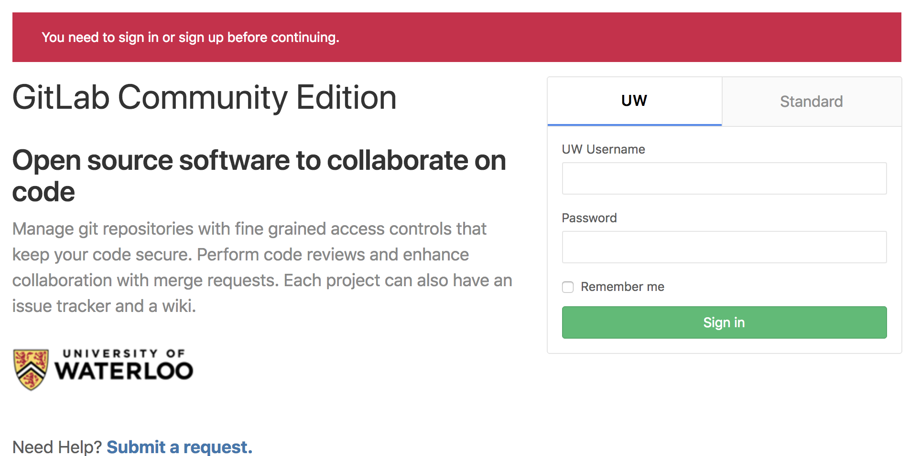
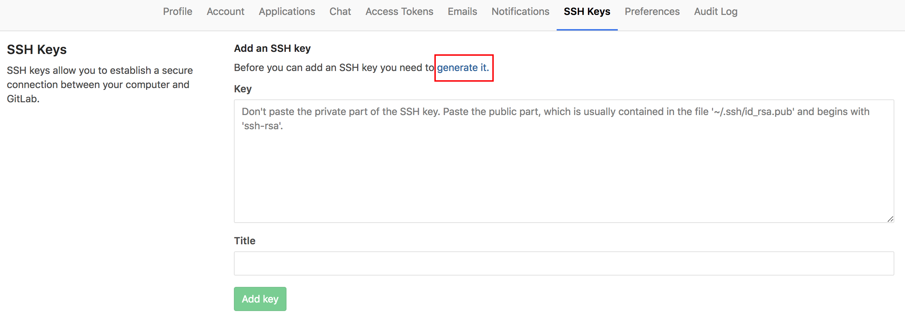
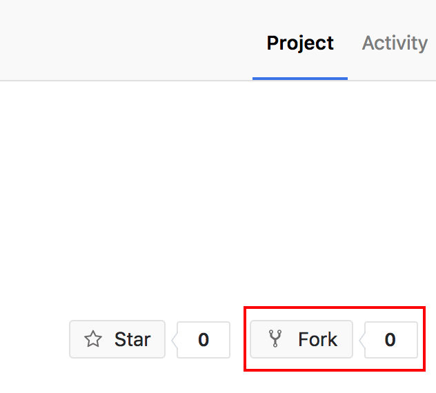
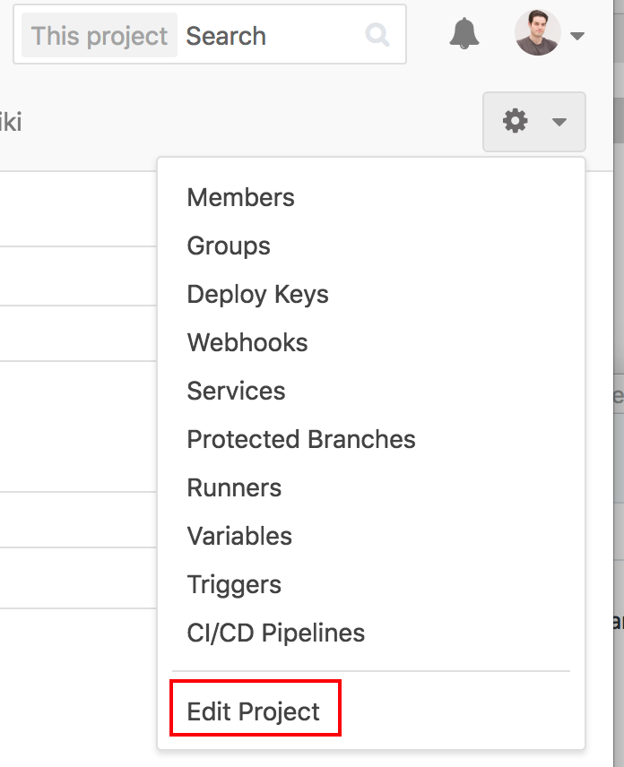
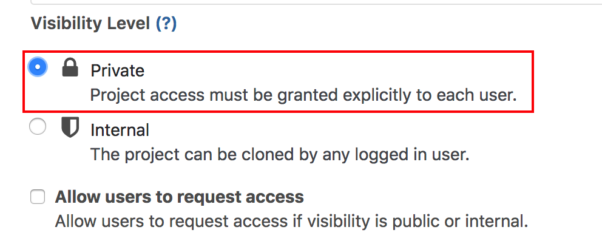
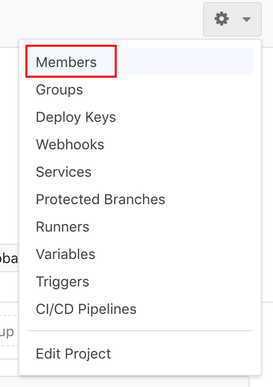
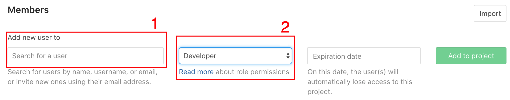
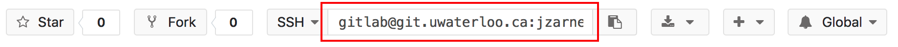

The exercises are designed and tested using the eceubuntu servers (connection and setup guide below). Although you can develop and test the code on your own laptop, course staff will only support running on eceubuntu, so if you’re having problems on your laptop we’ll say try it there.
Preferably in advance of the actual first exercise for the term, you should do the following things:
Set up and configure your git.uwaterloo.ca account.
Test if you can log in via ssh to eceubuntu servers. If you can’t, please contact Eric Praetzel, part of the ECE lab staff, at praetzel@uwaterloo.ca .
Gitlab is a web-based software product for managing source control repositories. The University of Waterloo runs this as a service at git.uwaterloo.ca. If you navigate there, you’ll be presented with this login screen, where you can log in with your Central Authentication Service credentials (same ones for Quest, etc.).

If you haven’t logged in before and haven’t set up your account before, then you need to do some one-time setup. If you’ve done that already, you can skip to the next section.
When logged in, you can set up your profile (to whatever detail you wish). But most importantly you will need to generate an secure shell key. Under “profile settings”, click on SSH Keys, as shown below. In the image, a red box surrounds the the link you can click on for instructions about how to generate a new SSH Key, or find yours if you already have one. If you have an SSH Key already, you should also put it on eceubuntu as well; if you don’t then you can generate yours on the server so you don’t have to copy it.

You need to add this key to your gitlab account so that when you want to interact with the git repository, the key is used to identify you.
eceubuntuThe eceubuntu name refers to a grouping of servers (eceubuntu1, eceubuntu2,...). Although the servers have some hardware differences, they are not relevant for the purposes of the exercise. They also share a file system, so any one is as good as any others, and if you find that one server is particularly busy you can move to another one and pick up where you left off. Even if you are not an ECE student, being registered in an ECE course should grant you access to the server.
Your login credentials (i.e., username and password) are the same as your WatIAM ones. The server full name is eceubuntu.uwaterloo.ca and most of the other options like port, etc. can be left as the defaults.
If you’re using Linux or macOS, open a terminal and connect by typing ssh USERID@eceubuntu.uwaterloo.ca, obviously replacing USERID with your actual userid. To connect to eceubuntu you need to be inside the campus firewall, except ecelinux4.uwaterloo.ca (and from there you should follow the message and connect to another server). And then you are connected.
If you’re using Windows 10, you can set up Powershell to be able to use ssh directly. Instructions are at https://www.howtogeek.com/336775/how-to-enable-and-use-windows-10s-built-in-ssh-commands/ . If that’s all set up and working then you just connect using the same command as in Linux/macOS.
You can also use a third party client to connect such as PuTTY or MobaXterm or anything else that you like. For space reasons I won’t repeat exactly how to configure them, but they are relatively self-explanatory. You can use any client you want to connect.
If you want to transfer files between your local machine and the eceubuntu servers you can use a SFTP (SSH File Transfer Protocol, or Secure File Transfer Protocol) client. If you do the whole exercise on eceubuntu then you don’t have to move files.
If you have everything set up correctly, when you log in you will be presented with a little login message (news and updates and information from the lab staff, which you should read) and be presented with the command prompt. Ready to go!
In the in-class exercise you’ll be provided the URL of that exercise. Navigate to that page and look for the “Fork” button. Click it.

As the gitlab description says: a fork is a copy of a project; forking a repository allows you to make changes without affecting the original project. Fork it into your personal space. This takes a moment, but you should quickly get the message “The project was successfully forked.” Then you have your own copy of the project and this is the one that you interact with.
Now you need to update the security settings so nobody else can see your repository, outside of the course staff. Go to your project settings (top right menu, gear icon) and click edit project:

Choose the private setting “Private” as below:

Then you need to add the course account to the repository so that course staff can review your code after you’re finished. So once again open settings (gear icon) menu and this time choose Members:

And add the course instructor (jzarnett) in the area labelled 1, then choose role “Developer” (box labelled 2), then click “Add To Project”:

After that you are ready to check the code out and begin working on it.
gitIf you would like to learn more about git or are just interested in the full reference you can use https://git-scm.com/book/en/v1/Getting-Started (or just search the particular command you would like to use). The commands shown here are the absolute bare minimum you need to know for a scenario where (1) you’ve never used git before, and (2) you work only on eceubuntu and don’t incorporate changes from anywhere else or any other users.
If you haven’t used git before, you need to set your name and email. So use these commands, obviously replacing FIRSTNAME, LASTNAME, and USERID with the actual values.
git config --global user.name "FIRSTNAME LASTNAME"
git config --global user.email "USERID@edu.uwaterloo.ca"When checking out a repository for the first time, use git clone, which takes as an argument the URL of the repository to clone. The URL for your repository is found in gitlab:

Make sure you choose the one from YOUR repository and not the one from the course instructor, otherwise you won’t be able to submit!
Copy the value from the highlighted box. It takes a moment to clone the repository. If it’s not going well, make sure you have your ssh key set up.
Then you’re ready to start working on the code. When you have made some changes you can add those changes to a “commit” using the command git add, such as git add example.c. To actually save those changes to your local repository, use the command git commit. This will tell you which files are being committed, and ask you for a commit message. You should write some meaningful message describing the work done.
You need to send any commits you have made back to gitlab using git push. Make sure your commits include all changes that you want to submit; if you’ve modified files since your last commit those changes do not get pushed unless they are part of a commit. You can push as many times as you like.
You can verify your changes were successfully pushed using the git.uwaterloo.ca web UI. Check to make sure the files you’ve changed are up to date there. The course staff sees what is in gitlab so make sure it’s correct!
The code that has been provided comes with a Makefile. This means that to compile the code all you need to do is run the command make in the directory where the code is checked out. This runs the compiler (gcc) with the correct arguments so that you don’t have to type them every time, for your convenience. You don’t need to modify the Makefile (most likely).
When compiling with make it still runs the compiler and you still see the compiler output on the console. If all goes well, an executable file is generated. If there are errors, then no executable file is generated (and the old one might still exist, if any). If there are warnings but no errors, the executable is still generated, but it is worthwhile to try to resolve the warnings. A quick internet search for the error you’re having will help in resolving it.
To run the code, if the executable file is called example, then you start it with ./example. The ./ is important because it means you explicitly indicate you want to run the executable file in the current directory. Without intending to get too far off track, this is a security measure – it means that if someone also called their program ls then you might run that one accidentally. Whoops. If the program takes arguments, then they follow on the same line: ./example argument1 argument2.